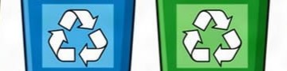
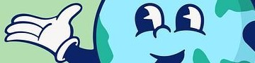
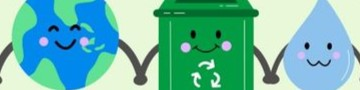

¿Por qué es importante reciclar?
Conocé cómo separar los residuos y contribuir al cuidado del ambiente en Las Varillas.
Separar los residuos permite recuperar materiales que pueden reutilizarse y reducir la cantidad de basura que generamos.
Con pequeñas acciones en nuestros hogares, podemos contribuir al cuidado del ambiente y mantener más limpia nuestra ciudad, Las Varillas.

Separación de residuos
Aprendé a clasificar los recursos.

Recolección
Consultá la información disponible.

Consejos
Incorporá hábitos para reciclar.